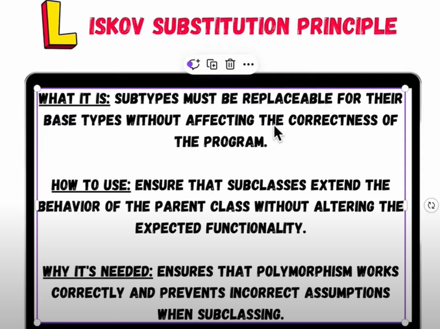

The Liskov Substitution Principle (LSP) is one of the SOLID
principles of object-oriented design.
It states that objects of a superclass should be br
replaceable with objects of a subclass without affecting
the correctness of the program. In simpler terms,
if S is a subclass of T, then we should be able to
replace T with S without altering any of the desirable
properties of the program (correctness, task performed, etc.).
This design adheres to the Liskov Substitution Principle,
ensuring that subclasses can be substituted for their base
classes without leading to unexpected behavior.
In summary, the Liskov Substitution Principle ensures that
when a subclass is used in place of its superclass, the behavior
of the program remains consistent and predictable. If you find
that substituting a subclass leads to errors or unexpected results,
it means the principle is being violated, and you may need to
reconsider your design.
